Seluruh diagram di bawah telah digenerate ulang dan disesuaikan 100% dengan kode program sistem aktual (Alur Checkout 2-Fase, Multi-guard Auth, Fabric.js state, dan Ekspor CSV/Cetak Laporan).
Gunakan shortcut Win + Shift + S untuk menyalin gambar diagram langsung ke naskah skripsi Word Anda.
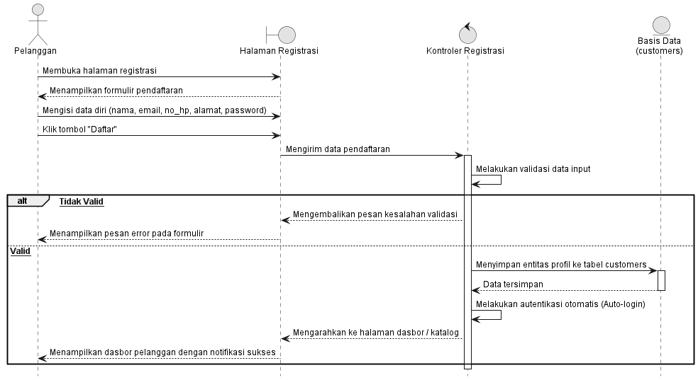
Gambar 3.18 sequence diagram menggambarkan alur interaksi antara pelanggan dengan sistem dalam proses pendaftaran akun baru. Alur dimulai ketika pelanggan membuka formulir registrasi dan mengisi data diri seperti nama, email, nomor telepon/WhatsApp, alamat lengkap, dan kata sandi. Kontroler kemudian memvalidasi isian formulir. Apabila data tidak valid, sistem mengembalikan pesan kesalahan. Jika valid, sistem menyimpan rekaman data ke tabel customers, melakukan autentikasi otomatis (auto-login), dan mengarahkan pelanggan langsung ke halaman katalog produk utama.
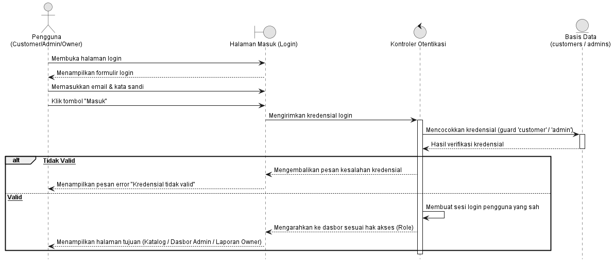
Gambar 3.19 sequence diagram menggambarkan alur autentikasi seluruh aktor (Pelanggan, Admin, dan Owner). Pengguna memasukkan alamat email serta kata sandi terdaftar. Kontroler otentikasi memeriksa kecocokan kredensial pada basis data multi-guard. Apabila kredensial tidak cocok, sistem menampilkan pesan peringatan gagal. Jika valid, sistem membuat sesi login aktif dan mendistribusikan pengguna ke halaman dasbor yang sesuai dengan hak akses (role) masing-masing.
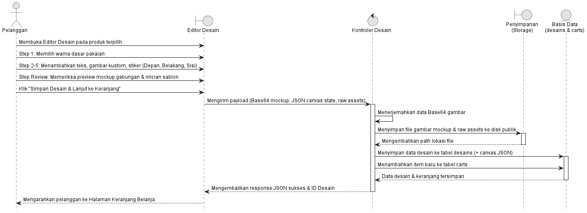
Gambar 3.20 sequence diagram menggambarkan alur perancangan sablon kustom pada editor kanvas interaktif. Pelanggan memilih produk pakaian, mengatur warna dasar, serta menambahkan teks, gambar, atau stiker pada tiap sisi (Depan, Belakang, Lengan Kiri, Lengan Kanan). Saat pelanggan menekan tombol simpan, data kanvas dikonversi menjadi berkas gambar Base64 dan objek status JSON (canvas_front, canvas_back, dll.). Berkas gambar disimpan ke penyimpanan (storage), sedangkan data desain dan relasi keranjang belanja dicatat ke basis data.
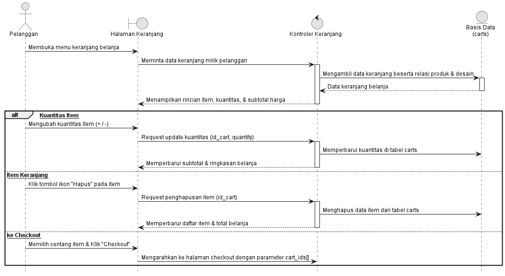
Gambar 3.21 sequence diagram menggambarkan alur pengelolaan item pada keranjang belanja pelanggan. Pelanggan dapat melihat rincian produk dan desain yang telah disimpan. Pada halaman ini, pelanggan dapat memodifikasi kuantitas belanja, menghapus item tertentu yang tidak jadi dipesan, atau mencentang item terpilih untuk diteruskan ke tahap checkout pemesanan.
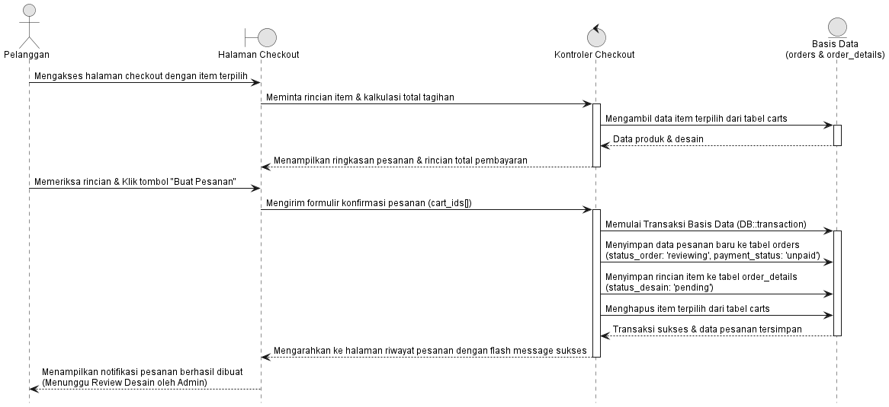
Gambar 3.22 sequence diagram menggambarkan tahapan konfirmasi pembuatan pesanan resmi oleh pelanggan. Pelanggan meninjau rincian item belanjaan dan kalkulasi total biaya pada halaman checkout. Saat pelanggan menekan tombol "Buat Pesanan", sistem memulai transaksi basis data atomik untuk membuat rekaman pesanan baru dengan status awal reviewing (Menunggu Review Desain) dan status pembayaran unpaid, membuat rincian item pada tabel order_details, serta menghapus item terpilih dari keranjang belanja.
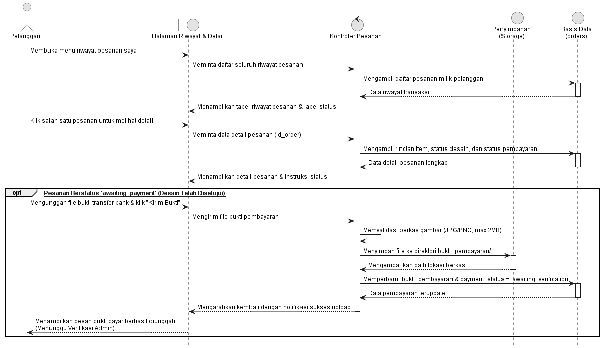
Gambar 3.23 sequence diagram menggambarkan alur pemantauan status siklus hidup transaksi oleh pelanggan. Pelanggan dapat melihat riwayat dan rincian pesanan. Ketika desain pesanan telah disetujui oleh admin (status pesanan menjadi awaiting_payment), pelanggan mengunggah berkas bukti transfer bank melalui form pada detail pesanan. Sistem memvalidasi berkas, menyimpannya ke direktori penyimpanan, dan memperbarui status pembayaran menjadi awaiting_verification.
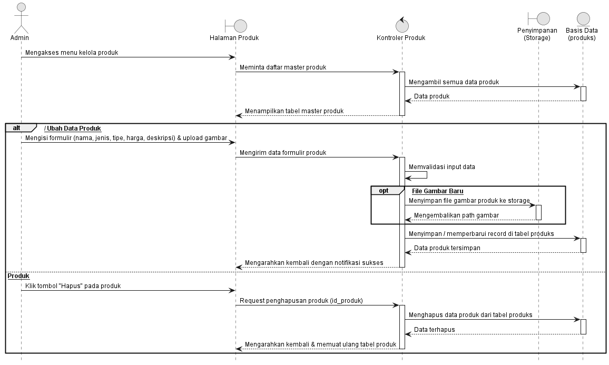
Gambar 3.24 sequence diagram menggambarkan alur pengelolaan data master produk oleh Administrator. Admin dapat melihat seluruh daftar pakaian mentahan dalam bentuk tabel. Admin memiliki wewenang untuk menambah produk baru lengkap dengan foto dan harga dasar, mengubah rincian produk yang sudah ada, ataupun menghapus produk dari katalog sistem.
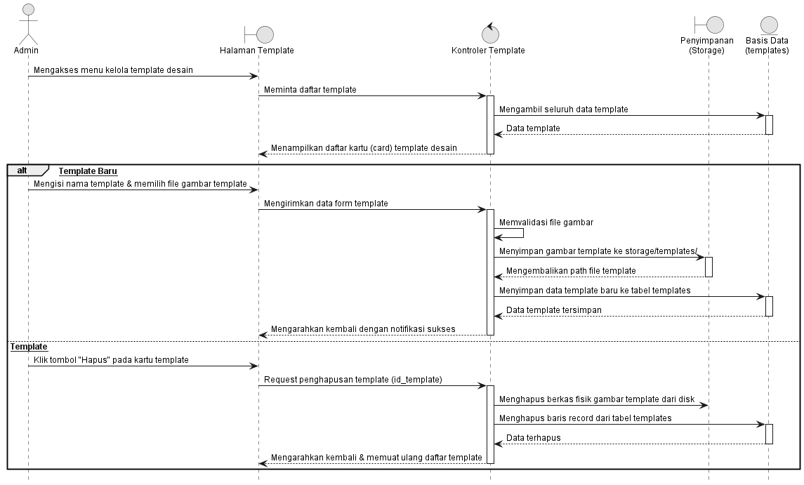
Gambar 3.25 sequence diagram menggambarkan alur pengelolaan aset template desain sablon oleh Administrator. Admin dapat menambahkan template baru dengan mengunggah berkas gambar yang kemudian disimpan ke penyimpanan sistem dan didaftarkan ke tabel templates. Admin juga dapat menghapus template yang tidak lagi digunakan, di mana sistem akan menghapus data di database beserta berkas fisik gambarnya secara permanen.
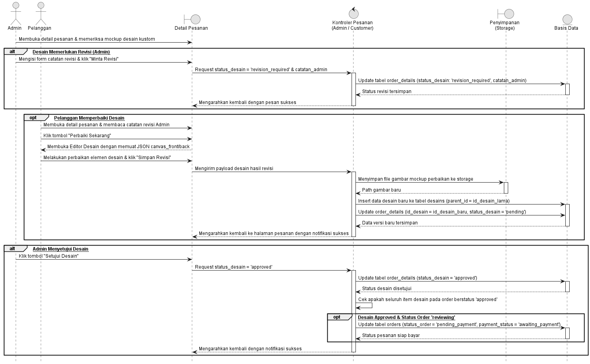
Gambar 3.26 sequence diagram menggambarkan alur kolaboratif antara Admin dan Pelanggan dalam evaluasi kelayakan desain sablon. Jika desain tidak memenuhi standar cetak, Admin memberikan catatan dan menetapkan status revision_required. Pelanggan membuka editor untuk memperbaiki desain yang disimpan sebagai versi baru (parent_id). Jika Admin menyetujui desain (approved) dan seluruh item dalam pesanan telah disetujui, sistem secara otomatis memindahkan status pesanan ke tahap siap bayar (pending_payment).
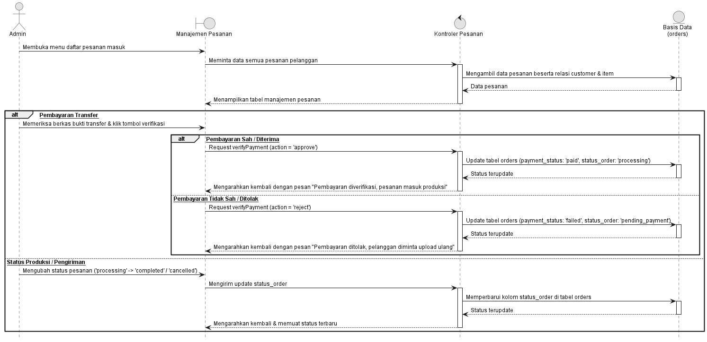
Gambar 3.27 sequence diagram menggambarkan pengelolaan transaksi operasional oleh Administrator. Admin memeriksa keabsahan bukti transfer pembayaran yang diunggah pelanggan. Apabila pembayaran sah, status diperbarui menjadi paid dan pesanan diteruskan ke status produksi (processing). Jika bukti tidak valid, status ditolak (failed). Admin juga dapat memperbarui status pengerjaan hingga pesanan berstatus selesai (completed).
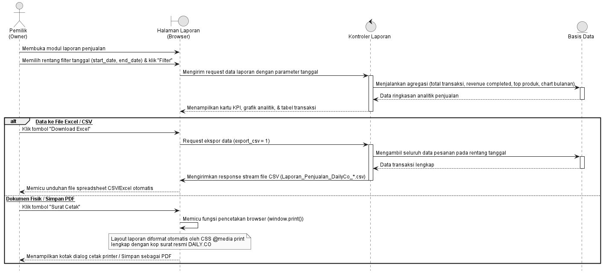
Gambar 3.28 sequence diagram menggambarkan alur pemantauan kinerja bisnis oleh Pemilik (Owner). Owner dapat memfilter rentang tanggal untuk melihat visualisasi grafik omzet, ringkasan transaksi, serta daftar produk terlaris. Owner dapat mengekspor rekapitulasi data transaksi ke dalam format berkas spreadsheet CSV/Excel, ataupun mencetak surat laporan resmi fisik melalui fasilitas pratinjau cetak browser (window.print).